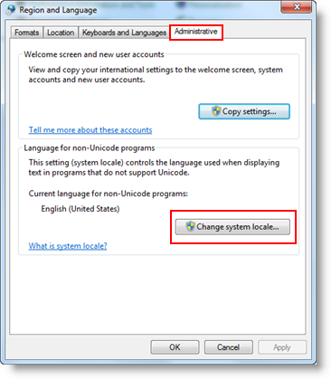

Journaling Troubleshooting
The following troubleshooting topics may help you to resolve possible issues with Desigo CC journaling.
Line Printer does not Print a Desired Language
Problem: Line printer does not print a desired language
Cause: The following are two causes due to which the line printer does not print in a desired language:
- Line printer firmware does not support the character set for the language you want to print.
- System locale is not set to the desired language.
Resolution: You must ensure the following:
- The line printer firmware supports the character set for the language you want to print. For example, if you want to print in Chinese, ensure that the line printer has the character set that supports Chinese characters and select it. To verify if the line printer supports the character set for the language, you must print the default settings of the line printer as they contain all the character sets supported by the line printer.
- To change the system locale to the desired language, perform the following steps:
- From the Windows Start menu, select Control Panel > Region and Language.
- The Region and Language dialog box displays.
- From the Administrative tab, click Change system locale.

- The Region and Language Settings dialog box displays.
- From the Current system locale drop down, select the desired language.
- A message for restarting the computer displays.
- Restart the computer to apply the changed settings.
- The system locale is set to the desired language.
Journaling Error Codes
The following table shows Journaling error codes along with their meanings.
Code | Meaning |
0 | Command executed successfully |
1 | Configured printer is not a page printer |
2 | Printer has no cached events for Journaling |
3 | Printer is not available for printing |
4 | Printer name is invalid or printer does not exist |
5 | Printer template is invalid |
6 | Journaling object not found to execute command |
7 | No Printer is configured with Journaling object |
9 | Unknown error |